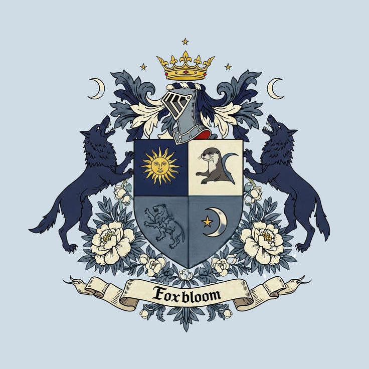
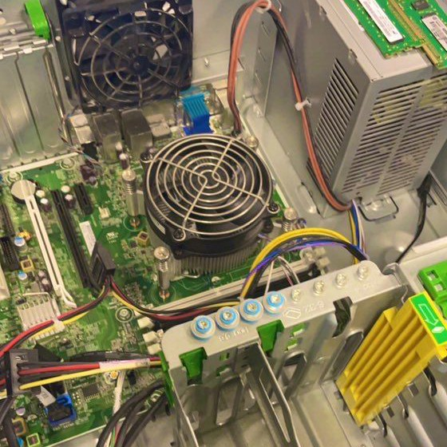

Jurusan yang membekali peserta didik dengan keahlian dalam merancang, membangun, dan mengelola infrastruktur jaringan serta sistem telekomunikasi masa depan.
Teknik Jaringan Komputer dan Telekomunikasi (TJKT) merupakan program keahlian yang mempelajari cara instalasi perangkat jaringan, konfigurasi server, keamanan siber, hingga teknologi nirkabel dan fiber optik. Program ini bertujuan membekali siswa agar menjadi ahli infrastruktur IT yang handal di era digital.

"Belajar di TJKT SMK Digital memberi saya dasar yang kuat untuk memahami bagaimana internet bekerja dan menjaga sistem tetap aman."